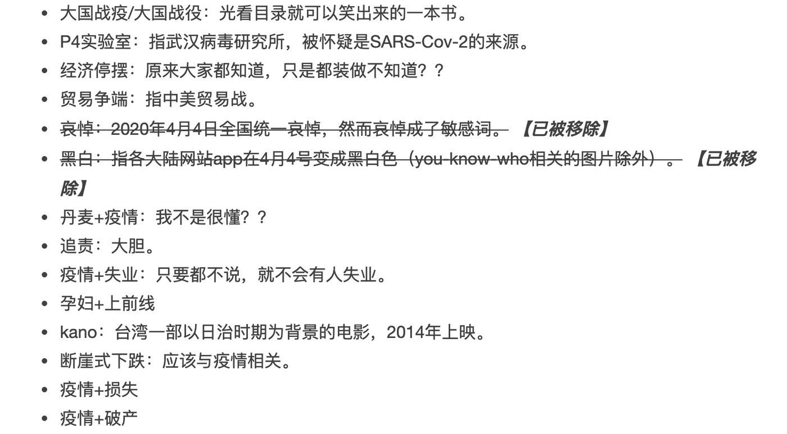

读者来函：端点星的自我放逐之旅 - NGOCN (@ngocncat)
Table of Contents
NGOCN
2020 年 5 月 4 日
按：通过这篇读者来稿，纪念2020年的五四青年节，还有刚刚过去的世界新闻自由日。今年新闻自由日主题为“无私无畏的新闻”，愿我们能珍视每个时代里面，那些无私无畏的年轻人。我们的投稿邮箱是：ngocn2020edit@protonmail.com，欢迎来稿。
“在审判中，谢顿说出他的预言，语惊四座。他计划领导众多学者编辑一本包含全人类知识的《银河百科全书》，以此减缓帝国殒落的后遗症。委员会得知他的计划并非颠覆帝国的阴谋诡计后，将哈里·谢顿的团队连同他的计划放逐到银河系的边缘端点星。”
Figure 1: 星云照片，来自Wikipedia
这段描述来自于阿西莫夫的著名科幻小说《基地》。端点即是终点，端点星位在银河系的最边缘。因此缘故， 从这颗星球上仰望宇宙，你几乎看不见单一颗恒星，只有巨大银河的透镜。
而在互联网的宇宙中，也有一个名为端点星的网站，它也位于互联网的某种边陲位置。至少，你在中国境内无法直接访问。尽管这颗端点星上没有编纂《银河百科全书》的学术团队，但它也进行着一项类似的工作------为那些被删除的网络文章做备份。前者抢救知识，后者抢救思考。
Figure 2: 端点星网站截图
从2018年4月到2020年4月，两年的时间，端点星网站上备份了614篇文章。 这些文章涵盖了“北大岳昕事件”、“高岩之死”、“高校性骚扰案”、“景云里7号”、“华为251”等一度热议，后被压制消音的议题。 当然，新冠肺炎疫情中的诸多报道与讨论也不可少。谁隐瞒了疫情？谁的哨音被掐灭？谁的眼泪与怒火无处安放？在这里，你几乎看不见大国抗疫的正能量感动，而是一个充满着异议、究责、反省的思辨宇宙。
4月19日，北京有三位年轻人失踪了，陈玫、蔡伟与小唐。 从那时起，半个月来端点星网站没有发布新的文章。但我相信，这只是暂时的。端点星的自我放逐之旅还将继续下去。
Figure 3: 陈玫、蔡伟与蔡伟的女友小唐从4月19日起失联至今
“抵抗404”、“去中心”、“开放参与”，让我们从这三个关键词来理解Terminus 端点星计划。
抵抗404，为了思考的自由
404是网页无回应的错误讯息，一般是由于网站无资金维持，或出了技术问题。
国外有互联网档案馆（Internet Archive）等非盈利机构为这样的网站做备份，保存网络上的知识与记忆。
而在中国，404的原因一般与资金和技术无关。一个网站无法访问，可能是因为中国的防火长城出于各种行政考量将其封锁，也可能是因为网站的管理者受到法律管制，被起诉、关站。 然而，最普遍的原因则是每一个社交网站都有的审查删帖机制。
在这三个原因中，社交平台自身的审查删帖机制往往是最可怕的，最难以克服的。若是防火长城的封锁，你还可以透过翻墙软件去浏览。若是法律起诉导致的关站，你至少还能找到相关的判决文书和起诉理由。 而社交平台的审查机制却会完全不留痕迹，被删除的文章连同它所牵涉的敏感议题会在几个小时内从社交平台上消失得干干净净。 连被删除的原因说明往往都被隐去。微博会让帖子凭空消失；豆瓣会告诉你，该篇文章转为作者本人可见；微信会跟你说“本文遭到举报所以下架”，虽然这篇文章可能才刚发出去几分钟，阅读者仅是个位数。
Figure 4: 常见的删除说明
社交网站的审查故意隐藏文章被删除的具体原因，这并非是因为删除原因属于机密事项，而是 因为越来越多的删除背后没有原因 。
加拿大多伦多大学的公民实验室长期研究中国互联网审查与监控，该机构曾对比4家中国视频直播平台的敏感词列表，发现这些视频平台的审查列表相差甚多。这意味着社交平台只从政府部门获得了关于审查的一般性指示， 具体执行上，哪些言论要被删除，哪些关键词要引发人工审核都是由各公司自己决定。 这并不是说社交网站具有审查的实质权力，而是反映了中国互联网监管的治理压力累计在了社交平台这一方。没有建立足够全面的审查机制，漏放了可能惹事的言论，最后还是网站平台被主管机关惩罚，惩罚方式包括但不限于下架APP、暂时关门整顿、取消部分功能、罚款。
不难想到，社交平台为了避免惩罚，会尽一切可能完善自己的审查机制，将红线越抬越高。 除了对平台本身有用的个人化的消费、娱乐讨论外，其他具有公共性的讨论与思考都是潜在的问题。毕竟，政治风云难测，谁也不知道哪个议题会成为政府的眼中钉。于是，审查机制脱离了行政官僚的僵化命令，开始扭曲、进攻。它一步步紧逼，消灭网络空间中的集体行动，消灭对政府的批评，消灭政治诉求，消灭民生诉求，消灭关于社会议题的讨论，消灭社会议题，消灭责任，消灭思考。
以豆瓣为例，最近我经常看到网友抱怨，说自己认真写了一篇学术讨论的书评却怎么也发不出来。之前还曾有人写了篇短文，分享自己与导师间的趣事，不知哪个词触动了审查，花了一个上午字字核对，却也没能成功把短文发出来。根据民间统计，豆瓣的审查词超过450个， 其中大量审查词语与政治敏感事件无关，只是关于社会现实的一般讨论，例如疫情+失业、贸易争端、春蕾计划。 有些不知所谓，让人完全不懂为何会被收录，例如影帝、撒传单、千人计划、形同虚设。 更讽刺的是，连“禁忌词”本身也被列入了审查词语列表。 至于人工审查，那就更是夸张与混乱。

Figure 5: 豆瓣审查词一角
我越发地感觉到， 404已经不只是对于言论自由的伤害了，它还限制了我们的思考自由，它删除了思考的材料，它紧盯着那些想要思考的人，它将思考逐出网络空间，让我们成为孤岛，成为角落。
也因此，抵抗404已经不再只是某种政治抗议了，我们争取的不是讨论某些政治诉求的权利， 我们争取的是每个正常社会都应该有的思考、讨论、反省的空间。
而在端点星网站上所收录的文章，大多数也正是宝贵的思考与记录。随手点开几则文章，我看到有人记录下被高昂房租逐出北京的家政工，我看到有人批评疫苗事件背后药品监管的缺失，我看到有人反思米兔运动中舆论审判的意义与局限，我还看到汶川地震的记忆，我还看到一家书店的葬礼。
我不忍心继续点开文章，因为审查的荒谬。
去中心，一场自我放逐之旅
对于谢顿的端点星来说，放逐是种惩罚，远离银河帝国的中心，失去优渥的资源与安全的保障。而对于端点星网站来说，这更像是 一种自我放逐，主动游离于主流互联网社交平台之外，在源代码平台GitHub上自我复制、繁殖。
2000年左右，关于互联网的想象是更加扁平的、均匀的。那时候，我们以为互联网由无数的网站所组成，每个人、社群、公司、机构*拥有自己的网站，储存自己的资料，发布自己的内容。彼此间平等地、点对点地互相传送内容，然后再生产新的内容。*恰如夏日夜空中的繁星，闪烁地散布着，引人陶醉却并不耀眼。
然而，互联网很快就变了。社交媒体、论坛、影片分享网站开始涌现，无力架设私有网站的个人开始汇聚到这些大平台上发布内容，并且更直接地互相交流。少数星球开始膨胀，扩增，吞并了周围的行星，变成一颗颗巨大耀眼的恒星。 这就是现在的状况，我们将资料集中于少数几个中心平台，也在这里与朋友沟通、分享。 百度、微信、微博、知乎、QQ、豆瓣，这几个大平台代表了差不多全部的中文互联网空间。
Figure 6: 少数社交平台占据了互联网的大部分流量
404的泛滥与互联网中心化的趋势密切相关。因为审查是权力核心的直接运作，中心平台的架构让审查机制能顺利实现。 发现一篇有问题的微信文章，只需要在用户发布的时候进行关键词检索，在浏览量达到一定程度时进行人工审核，然后便可以轻松地取消这篇文章的阅读权限。而对于一个有问题的个人博客网站，光是要发现它有问题就非常困难，资料不在审查方。自动的机器爬虫可能会被网站所阻挡，而即使找到了目标，也几乎无法完全删除其中的资料，而只能使用防火长城这样笨重的工具封锁其域名或ip地址。然而，网站所有人只要更换域名、更换ip，便又可以重出江湖，成本极低。恼羞成怒的审查者可能会开始发动警察、起诉网站所有人。但要在赛博空间中找到具体的个人，谈何容易。相关的人力、行政成本更是无法估量。端点星网站成功运作两年不受干扰，也是应证了这一点。
所以，去中心成为抵抗404最有效的一条路径。它的原则很简单：自己掌握自己的资料，利用互联网最基础的HTTP协议传输（也就是用浏览器直接访问网站）进行资料的传输，开放资料的复制备份。 然后，你还可以加上匿名与加密，切断实体个人与网络空间的联系。去中心并非什么新的发明，而是从互联网创立之初就一直存在，却被国家与市场所遮盖。
但自我放逐之旅也并非多么轻松的旅程。去中心是困难的，至少曾经是困难的。架设自己的网站平台，管理自己的服务器，还要安排好域名、ip地址等等各种繁杂的网络设定，这些工作通常被认为是专业者才能完成的。 不过，随着开放源代码社群和各路黑客的努力，在2020年的现在，以上大部分工作都有自动化程序可以帮助你解决。 搭建自己的博客，只需要花费一两天的时间。
或者，就像端点星网站所做的这样，将网站内容都寄放在GitHub网站提供的免费网络空间中。虽然GitHub平台实质上也是一个中心平台，但它受到开源社区的监督，还拥有一键下载、复制的去中心化功能，而且因为本身就是源代码托管平台，这些特点保证了其开放特性。此外，中国的程序员同样需要GitHub上的源代码来完成工作，所以该平台并没有被防火长城所屏蔽。
Figure 7: GitHub网站LOGO
在本文写作的时候，端点星网站在GitHub平台上已经有过245次复制（在Git中被称为Fork），下载则无法统计。每一次复制都是一个完整的端点星网站，可以在修改几行代码后上线，诞生一个新的端点星。名字、内容，通通都可以方便地修改，要叫“起点星”也可以，要叫“石头汤”也好。 虽然目前为止，这些复制都还只是资料的备份，但或许过段时间后，当人们察觉到端点星网站的异样后，就会在端点星的基础上开始搭建自己的星球。这个意义上，我们从未失去过端点星。
端点星的自我放逐之旅仍在继续。
开放参与，这个时代的赛博叛客
除了储存文章的端点星网站外，Terminus端点星计划还建有一个定期检测、保存微信上被删除文章的爬虫项目，一个自动进行网页存档和404检测的Telegram机器人，还收集了许多与社会议题相关的GitHub项目。
端点星网站的域名是Terminus2049。2049这个数字来自于电影《银翼杀手2049》，一部关于复制人、科技、虚拟、记忆的电影。 它被归于当红的科幻风格“赛博朋克”，也有人翻译为“赛博叛客”，我更喜欢这个名字。
Figure 8: 电影《银翼杀手2049》剧照
赛博叛客风格的电影都设定在高科技的时代背景下，霓虹灯闪烁、大型电子屏幕、全息投影、无数的飞车穿越在跨国企业的摩天大楼中。但同时， 高科技的时代却同时是人类个体原子化的时代，主人公往往生活在肮脏狭小的贫民窟中，或者尽管宽阔却破败的废弃大楼里，过着贫穷无望的生活。 迷幻药、个人电脑、互联网则是赛博叛客手中反抗/犯罪的道具。
或许是因为喜欢赛博叛客的风格，也或许只是喜欢《银翼杀手2049》这部电影，端点星的创办者给自己的网站加上了2049的标签。而我觉得， Terminus端点星计划本身就是这个时代的赛博叛客。
赛博叛客电影中的主角们都是神通广大、技术一流的黑客，自由来取于企业总部的主机、政府安全资料库还有自己的家用电脑终端之间。但这些个人英雄式的浪漫想象却刚好与原子化的时代相呼应，在现实中，技术的背后需要庞大资金支持，孤胆英雄从未成功过，网络空间也并非宽阔得能让人自由驰骋。 说到底，原子化的问题正是统治与支配的另一面，我们的时代需要不同的赛博叛客。
而端点星则做了很好的示范。开放参与，而不是孤胆骇客。
在端点星首页上置顶的文章名为“如何协作参与端点星计划”，其中详细地说明了个人可以如何上传、编辑文章，将被删除的文章备份于此。 许多人只在端点星上浏览文章，却不知道这背后是众人合力贡献的成果。此外，前文提及的Telegram机器人也是在协助一般使用者更方便地备份文章，让抵抗404的工作扩展成公众行动。
甚至，参与行动的也远不只是肉身个人，Telegram机器人、GitHub平台、爬虫，以及其他种种开源工具，还有那些代码，都是抵抗404的行动者。
陈玫与蔡伟编织了一张网，联结了肉体与机器、真实与虚拟、代码与思想，这张网在银河系的边缘生长、增殖着。
它名为端点星。
Figure 9: 端点星计划LOGO
我们是一家非营利性质的独立媒体，我们关注环境、教育、性/别、精神健康等公共议题，为公众提供负责的纪实性内容。
点击链接可订阅我们的精选邮件：https://jinshuju.net/f/sGicEk
CC BY-NC-ND 2.0 授權